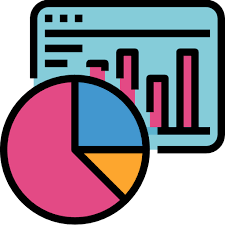

La gestión estratégica de Talento Humano
Orientación a objetivos estratégicos de organizacionales
Definición de prioridades por módulos
Análisis de data
Creación de indicadores de talento humano
Conectando la gestión
Fecha: Lunes 4 y martes 5 de Octubre 2022
Horario: 18h45 a 21h30 Vía Zoom
Costo:
$59+IVA Miembros Red
$69+IVA No Miembros

Indicadores de gestión de Talento humano
Asistente de bodega y logística Aprende los procesos de toma de manejo de stock, flujo de materiales, manejo apropiados de cargas. Aprende técnicas modernas para toma y control inventario, llevar tus procesos de forma ordenada y profesionaliza tu conocimiento con un experto.
Fechas: Sábado 2 y domingo 3 de Septiembre 2022. Hora: 08h00 a 13h15 via Zoom
Valor: $79 + IVA Miembros Red, $89+Iva Costo normal.
Curso presencial Analista de nómina y compensaciones
Preparar a un Analista de nomina revisando las principales actividades a realizar en el calculo de compensaciones.
Temario:
Cálculo de rol de pagos
Beneficios sociales: Decimo tercer y cuarta remuneracion, fondos de reserva.
Impuesto a la Renta
Horas suplementarias y extraordinarias
Sistema SUPA
Ingreso de trabajadores al SUT y contratos
Actas de finiquito
Sistema de salarios en linea
Pagina del IESS: Registro de novedades, anulaciones, generacion de planillas, accidentes.
Fecha: Sabado 9 y domingo 10 Septiembre 2022
08h00 a 18h00 Bankers club Guayaquil, Malecon y P. Icaza
Costo: 149+iva Miembros Red o estudiantes.
$169+iva Costo normal
Actualización laboral 2022
Actualización laboral 2022
Conoce lo último sobre la Legislación laboral Ecuatoriana
(Ley humanitaria) Contrato de emprendimiento, contrato emergente.
Procedimiento de visto bueno
Discapacitados y sustitutos
Ley de pasantias
Formas de terminación del contrato de parte del empleador y trabajador
Vacaciones
Decimo tercer y cuarta remuneracion, aspectos legales
Indemnizaciones por casos de embarazo
Permiso de maternidad y lactancia
Fecha: Sábado 16 de Octubre 2022 08h30 a 17h30 Bankers club Guayaquil, Malecon y P. Icaza
Costo: 129+iva Miembros-estudiantes $149+iva costo norma
Balanced Scorecard e indicadores de gestión
BALANCE SCORECARD Y ELABORACIÓN DE INDICADORES DE GESTIÓN
Temario:
La gestión empresarial y el marco estratégico
Desarrollo estratégico de un caso empresaria
Medición en la gestión estratégica
Análisis del entorno con índices
Definición e implementación de la estrategia
CONSTRUCCIÓN DE INDICADORES DE GESTIÓN
Conceptos Básicos de medición organizacional
Estructura de medición
Marco conceptual de objetivos e indicadores
Técnicas de diseño de indicadores
Arquitectura de los indicadores
Análisis y toma de decisiones con indicadores de gestión
Monitoreo y control de gestión
DISEÑO DEL BALANCED SCORE CARD
Conceptualización y principios estratégicos
El Mapa Estratégico
Construcción del sistema balanceado de indicadores (Estratégico – Táctico – Operativo )
El cuadro de mando integral (CMI)
Modelo de implementación (caso real)
Taller práctico
Fecha: Sabado 16 y Domingo 17 Septiembre 08:00 a 13:15 via Zoom
COSTO
$69+IVA Miembros Red TH
$79+IVA No miembros Red
Excel Intermedio
Excel Intermedio totalmente práctico modalidad online:
Aprende las fórmulas más usadas para optimizar trabajos, tablas dinámicas, gráficos, análisis de datos y demás funciones de nivel intermedio.
Lunes 18 al jueves 21 Octubre 19:00 a 21:45 vía plataforma Zoom
Valor: 59 USD + IVA Miembros y 69+Iva no Miembros. Incluye: Material Digital y Diploma
ayuda del sistema
Actualiza a tu equipo de trabajo con nuestros cursos abiertos y cerrados. Además, somos proveedores de programas de capacitación del INSAFORP